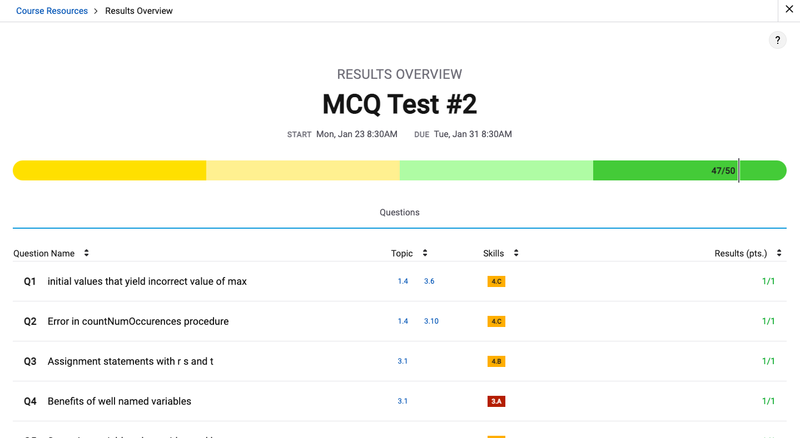
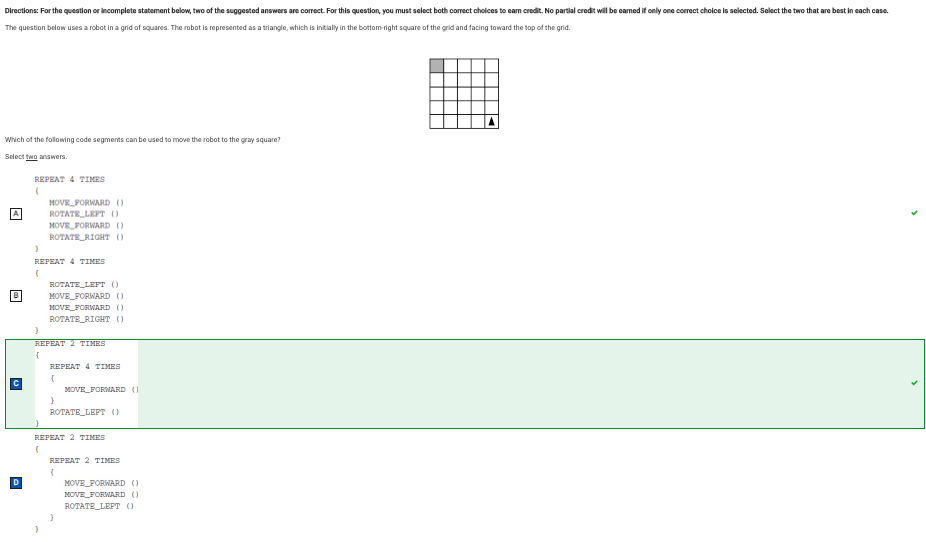
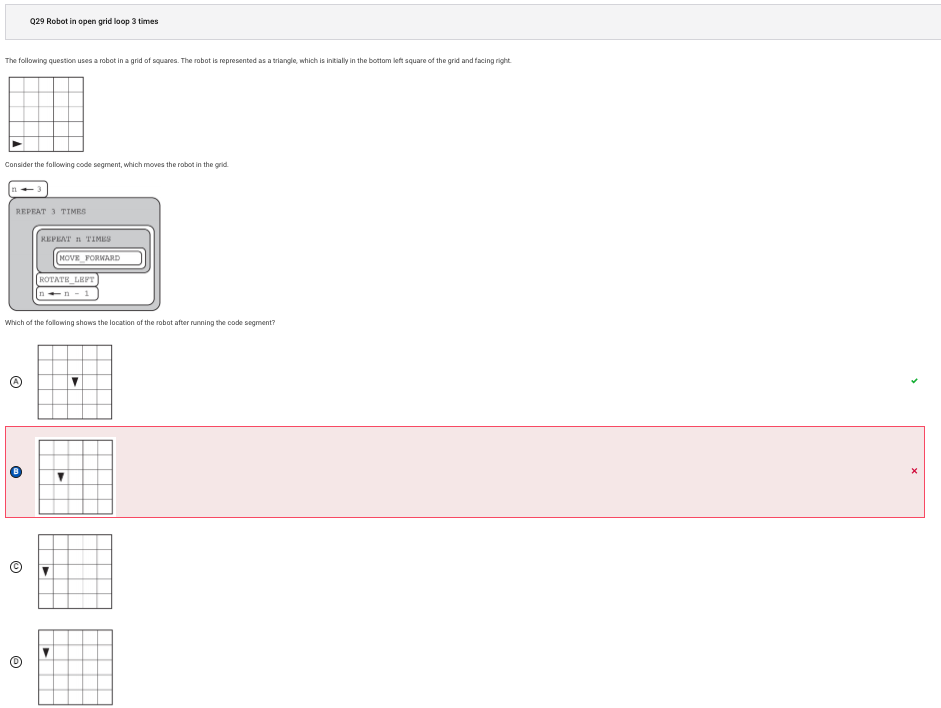
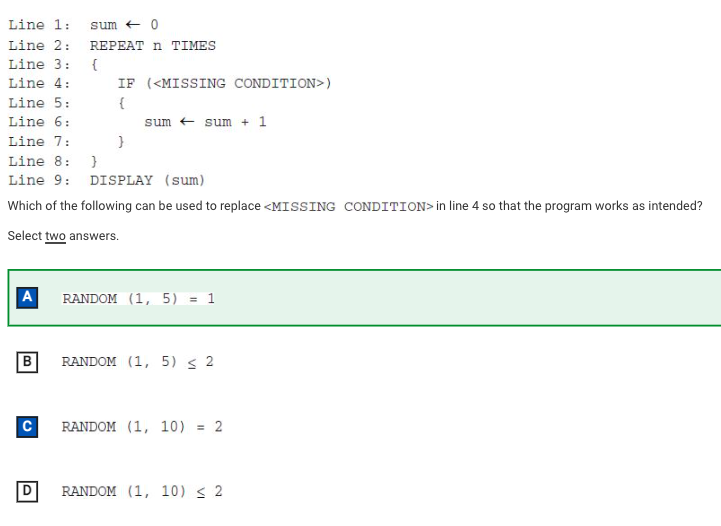

|
Home | About Me | Time Box | Funny picture of a bird | Java Testing | Java Table | API |
|---|
Score: 47/50

Question #28

I chose C and D because I thought that it wasn’t A and B. It actually is A because it will follow a diagonal path to the square.
Question #29

Very simple question I just miscounted because I was in a rush.
Question #41

D is the correct answer because (1, 10) = 2 represents when it equals 20% of the voters. C is wrong is wrong because it includes 20% and 10%.